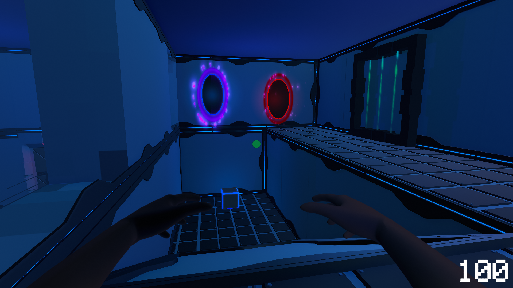

Project Summary
A puzzle game in which the player possesses the power to open rifts on walls in order to solve puzzles with the help of an energy cube.
- Development Time: 2 months.
- Team: 5 people.
- Game Engine: Unity.
- Genre: Puzzle/Platformer
The core mechanic
The player has the ability to spawn rifts on the wall. One is blue and the other is red. The blue one draws nearby objects into it and the red one is used to push those objects out of it. I know this sounds a lot like "Portal". The main difference is that the player can't use these rifts to move between spaces. Only objects my pass through them.
In this case, the objects was a single cube, which you can see in the picture. In order to open the door for each room, and solve the puzzle room, the player has to use the rifts to push the cube through a scanner (The square object to the right of the picture).
Level design
My job as a level designer was to design each puzzle room. I also needed to keep in mind that I needed to lead the player, help them understand the mechanic and how to use it. The puzzles start off easy, as to make the player comfortable with the mechanic, and slowly increase in difficulty. It was also important for me to make sure that as the player enters each room, there would not be any unnecessary confusion. In other words, I had to carefully frame the important objects, the cube and the scanner, in the room in a way that would make the player aware of what to do.
Challenges
Remember how i mentioned Portal? Well, I wanted to make the overall pace and flow of the game to feel just like in Portal. I also wanted the puzzle rooms to be as dynamic and fun to play through as in Portal. After quite some time in to the development process, as I was struggling to design new puzzle rooms, I came to the realisation that it would be incredibly hard to make fun and dynamic rooms. I realized that the core difference between "you gotta be rifting me" and Portal is that the player has the ability, and most importantly the requirment, to move the character through portals in order to solve puzzles, which in itself made the puzzles more dynamic and fun.